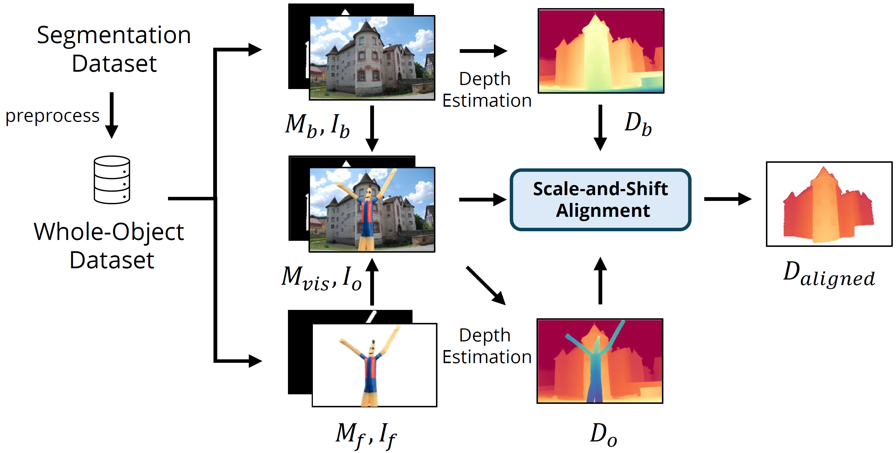
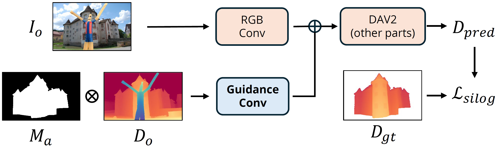
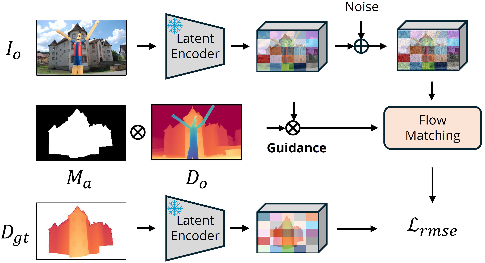
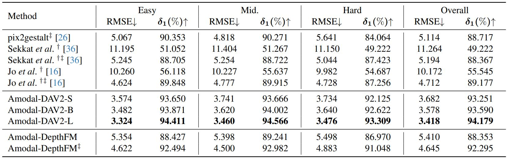
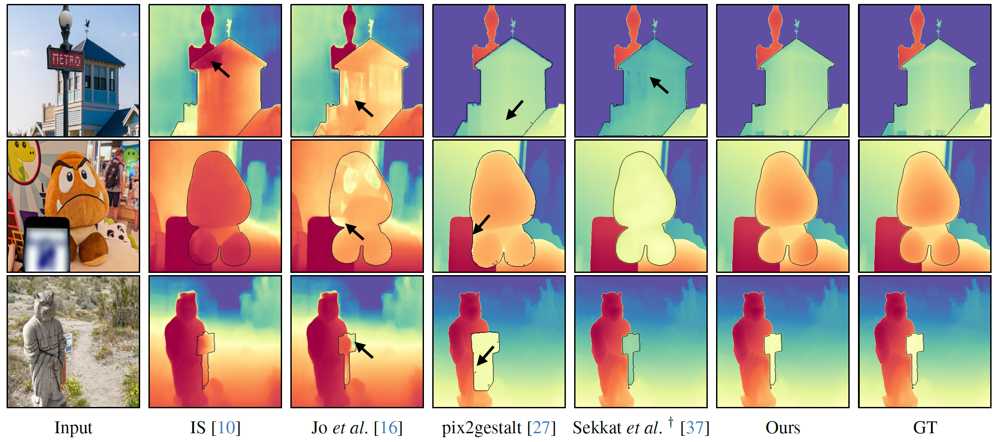
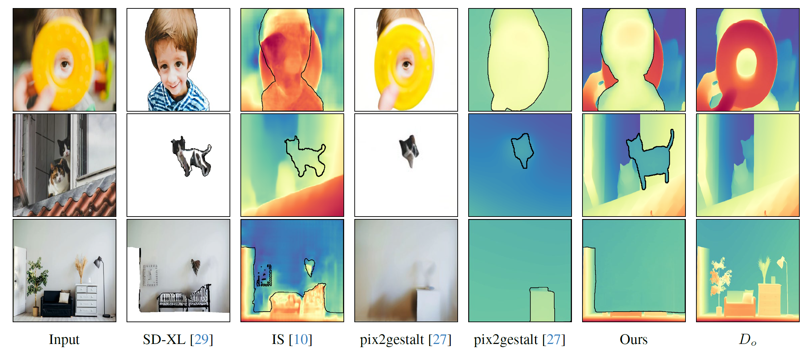
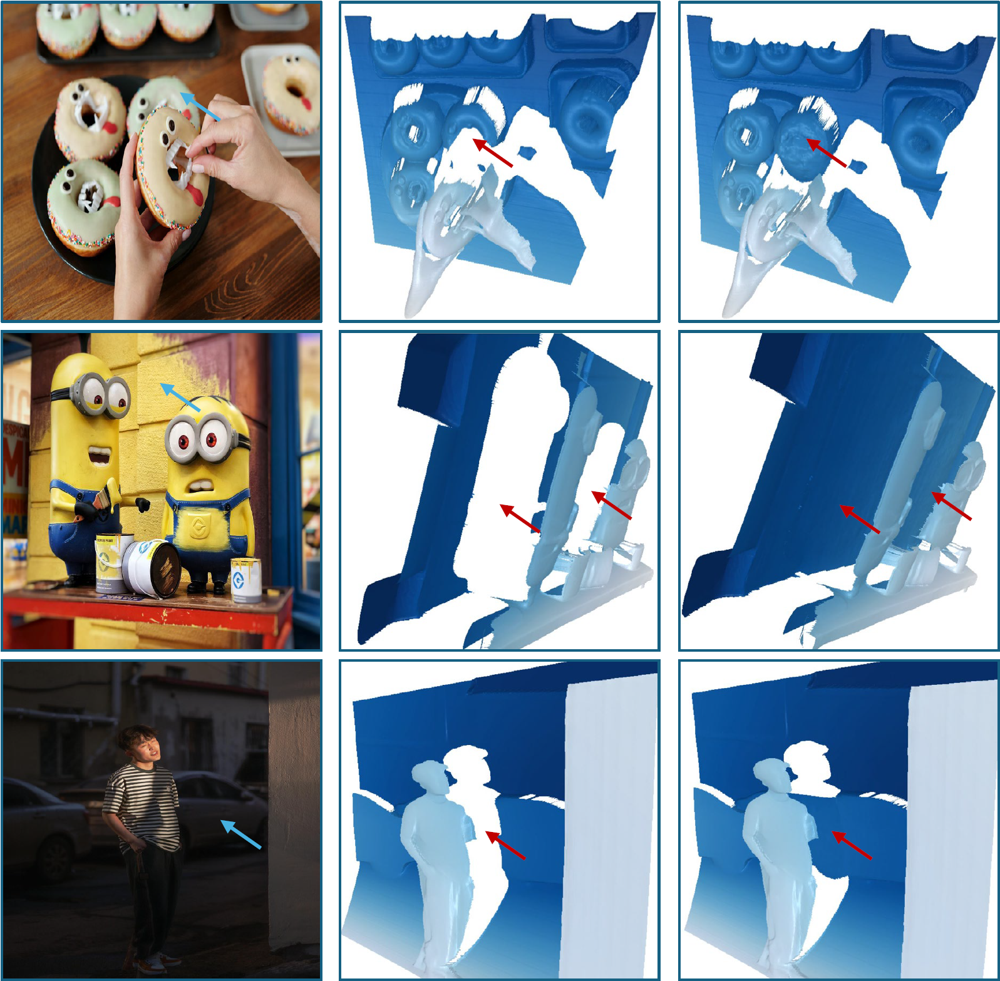

We present ADIW, a comprehensive dataset created to train models on amodal depth estimation using real-world data. Through an innovative compositing approach, we leverage segmentation datasets to enable scalable, high-quality depth annotations, adapting the powerful Depth Anything V2 model for enhanced occlusion handling.
Our work introduces two distinct frameworks for relative depth estimation: Amodal-DAV2 for deterministic models and Amodal-DepthFM for generative models. Both frameworks integrate guidance signals and pre-trained large-scale models to achieve precise depth estimations in occluded areas.
Experimental results validate our method as SoTA for amodal depth estimation on ADIW, showing strong performance across real-world images and adaptability to complex occlusions.
Novel task formulation: Amodal depth estimation with a focus on relative depth, providing improved generalization.
ADIW dataset: A large-scale dataset generated from real-world images with advanced compositing and alignment techniques.
Innovative frameworks: Amodal-DAV2 and Amodal-DepthFM, achieving high-quality predictions using minimal modifications to pre-trained models.
👀 Interactive Comparison Tool
Slide to explore RGB, general depth, and amodal depth representations in real-world zero-shot samples.
Amodal depth estimation extends traditional amodal segmentation by predicting depth for occluded areas. Unlike prior work, which focused on metric depth estimation, our approach estimates relative depth values, allowing for more adaptable depth predictions across real-world scenarios. Given an input image, observed depth map, and an amodal segmentation mask, our objective is to predict consistent occluded region depths.
Dataset Collection
We present the ADIW dataset, a large-scale, real-world dataset designed for amodal depth estimation. To create training data, we overlay segmented objects onto natural images to simulate occlusions. Since foreground objects obscure background depth, we use scale-and-shift alignment to harmonize depth values between composite and background images.

Amodal Depth Estimator
To adapt large pre-trained models for amodal depth estimation, we minimally adjust their architectures for predicting occluded region depth. Our approach focuses on two model types:
Amodal-DAV2: This deterministic model uses Depth Anything V2, adding guidance channels for occluded areas and optimizing through scale-invariant loss.
Amodal-DepthFM: Built on DepthFM, this generative model adapts conditional flow matching, leveraging added channels for occlusion-specific guidance.

Amodal-DAV2: Modified DAV2 image encoder to take additional guidance channels.
For improved depth map consistency, we employ scale-and-shift alignment, blending model output with observed depth maps over shared regions to enhance depth coherence in occluded areas.

Amodal-DepthFM: DepthFM structure with modifications for latent space guidance.
Results
We compare our methods against other possible solutions on ADIW Dataset. †: Models retrained on our dataset for fair comparison. ‡: Scale-and-shift alignment applied for consistent prediction handling. Note that Amodal-DAV2 does not rely on this alignment approach.

Visual Comparisons on the ADIW Validation Set
Invisible Stitch, using a metric depth model, shows depth shifts compared to relative depth methods. Our Amodal-DAV2-L maintains the most accurate scale, shape, and detail.

Visual Comparisons in the wild
Our amodal depth models directly regress the depth of invisible parts without relying on RGB information, using only the amodal mask as guidance. These results demonstrate that our approach provides strong geometric priors, which could also serve as a useful condition for inpainting.

Reconstructed 3D Mesh for Occluded Object
Blue arrows indicate the target object and red arrows highlight the reconstructed meshes for occluded parts of objects, respectively. Left: Input image. Middle: Mesh from general depth. Right: Reconstructed mesh combining general depth and amodal depth.

🔥 Citation
@article{li2024amodaldepthanything,
title={Amodal Depth Anything: Amodal Depth Estimation in the Wild},
author={Li, Zhenyu and Lavreniuk, Mykola and Shi, Jian and Bhat, Shariq Farooq and Wonka, Peter},
year={2024},
journal={arXiv preprint arXiv:x},
primaryClass={cs.CV}}